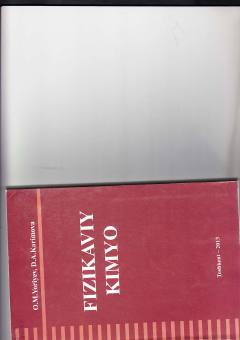

FKOliy o'quv yurtlari talabalari uchun fizikaviy kimyo fanidan o'quv qo'llanma.
Ushbu o'quv qo'llanma Oliy va o'rta maxsus ta'lim vazirligi tavsiyasi asosida tayyorlangan bo'lib, fizikaviy kimyo fanining asosiy bo'limlarini o'z ichiga oladi. Unda termodinamika asoslari, eritmalar, kimyoviy kinetika va kataliz kabi mavzular batafsil yoritilgan. Qo'llanma oliy o'quv yurtlari talabalari va sohaga qiziquvchilar uchun mo'ljallangan.